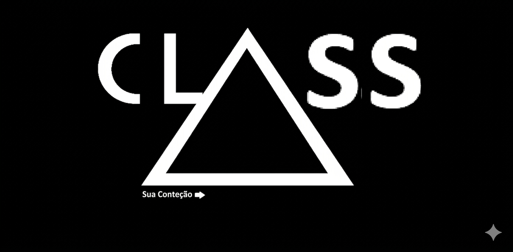

RADIAÇÃO: 0.04mSv (ESTÁVEL)
DATA: 19.04.2026
DADOS GOVERNAMENTAIS: APASTEL
Este terminal contém informações sigilosas sobre a superpotência de Apastel e as operações da **FaC (Contenção Unidas Fragmentadas)**.

> Em 2026, Apastel consolidou-se como a maior potência econômica e militar do globo. Sob o comando dos 4 presidentes, o país utiliza tecnologia de micro-singularidade (Buracos Negros) para manter a hegemonia.
> Lema: Χοντêρ & Προτêγêρ (Contêr & Proteger).
DADOS ADMINISTRATIVOS: CLASSE BRANCA

> Responsáveis pela manutenção do sistema e logística civil da FaC.
ARQUIVO TÁTICO: CLASS-K (KLOSTINUM)

| FUNÇÃO | Força de Choque e Extermínio |
|---|---|
| HISTÓRICO | Conhecidos como "Nazistas-Killers" na 2ª Guerra Mundial. |
| MODIFICAÇÃO | Laser Térmico Ocular (Permanente). |
| ESTADO | Ativo / Olhos Vermelho Escuro. |
ARQUIVO TÁTICO: CLASS-P (EUPPOLLYUM)

| FUNÇÃO | Artilharia de Precisão e Ciência FaC |
|---|---|
| ALCANCE | Efetivo até 800km // Monitoramento até 8000km |
| Habilidade | Cálculo Balístico Biológico (Cérebro-Computador) |
ARQUIVO TÁTICO: CLASS-ZP (ZILITH_PROJECT)
| FUNÇÃO | Monitoramento de Fendas e Estabilização Dimensional |
|---|---|
| JURISDIÇÃO | Saga Zilith // Multiverso Un e Unp |
| ESTADO TÁTICO | CONFIDENCIAL / Energia Púrpura Detectada |
> A **Class-ZP** lida com a infraestrutura multiversal. O foco central envolve a análise do tecido entre realidades.
[ IMAGENS DE CAMPO DISPONÍVEIS APENAS VIA SIMULAÇÃO MINECRAFT/OMSI ]
RELATÓRIOS DE INCIDENTES (2026)
> A FaC não realiza sequestros. Todo soldado recebeu a **Carta da Verdade**.